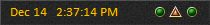

This option allows you to chose this style for the Clock window.
This style Clock window displays the current real time along with a performance meter. The performance meter is arranged in normal order representing Performance (Packet Loss), Lag (Ping Time), and then Frame (Frames per Second). The indicators change from green to yellow then red as the lag increases and performance/frame rate drops.

Note: The performance meter images can be changed using the Performance options.